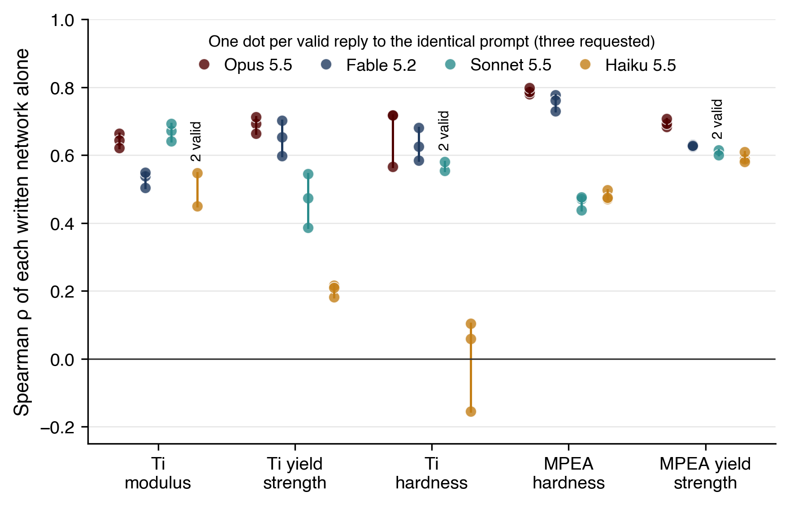

MATERIALS SCIENCE & ENGINEERING
TEXAS A&M UNIVERSITY
Department of Materials Science and Engineering
41

Range of ρ over a model's replies
Opus: ≤ 0.05 on 4 tasks,
0.57 to 0.72 on Ti hardness
Haiku, Ti hardness: −0.15 to 0.10
3 of 60 replies invalid
(Sonnet 2, Haiku 1)